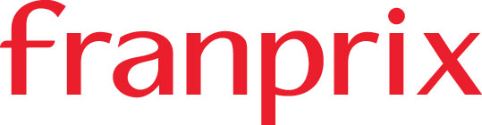

홈 > 브랜드 매거진 > Franprix
Franprix
프랑프리(Franprix)는 파리와 일드프랑스 도심에 집중된 프랑스 카지노 그룹 산하 도시형 근접 슈퍼마켓 체인이다.
산업 분야 리테일·커머스 · 공개 등급 자료 기반 · 브랜드 평가 4.1 ★

한눈에 보는 브랜드
프랑프리(Franprix)는 프랑스 파리와 일드프랑스 도심에 밀집한 근린형 슈퍼마켓 체인으로, 1958년 슈아지르루아 식료품상 집안 출신 장 보(Jean Baud)가 창업했다. 매장 면적 500제곱미터 미만의 소형 도심 포맷을 일관되게 고수해 온 점이 핵심 식별 요소다.
첫 번째 전환점은 1997년 카지노 그룹의 자본 참여로, 2009년경 지분 100퍼센트 인수가 마무리되며 그룹 산하 도심 핵심 브랜드로 편입됐다. 두 번째 전환점은 2024년 카지노 그룹 전체의 재편 속에서 도심 컨비니언스 사업으로 재집중된 것이다.
현재 프랑스 전역에 600여 개를 넘는 매장을 운영한다.
브랜드 관점
프랑프리의 차별점은 대형 하이퍼마켓이 채우지 못한 도심 고밀도 생활권을 좁은 면적으로 파고든 데 있다. 프랑스 소비자는 자주, 소량으로 장을 보는 습관이 강한데, 프랑프리는 도보권 입지와 신선식품 중심 구성으로 이 수요를 정밀하게 겨냥했다.
모회사 카지노 그룹이 인수 과잉과 점유율 하락으로 채무 위기에 빠지자, 2024년 다니엘 크레틴스키 컨소시엄이 약 12억 유로 신규 자금 투입과 약 61억 유로 규모 채무 감축을 골자로 경영권을 확보했고, 적자 대형점 정리와 함께 모노프리·프랑프리 같은 도심 소형 포맷으로 사업을 재집중하는 회생 전략을 택했다. 시장 함의는 분명하다.
프랑스에서 팬데믹 이후 근린 매장이 급성장해 컨비니언스가 대량유통 매출의 약 11퍼센트를 차지하고 도심 소형점 매출이 48퍼센트가량 늘어난 반면 하이퍼마켓은 감소했다. 한국 독자에게 이는 대형마트 정체와 도심 소형 슈퍼·편의점 확장이 맞물린 국내 흐름과 겹쳐 읽을 수 있는 사례다.
시작과 성장
프랑프리가 등장한 1950년대 말 프랑스 유통은 자동차 보급과 교외 대형점이 부상하던 시기였으나, 정작 파리 도심 고밀도 주거지의 일상 장보기 수요는 충분히 채워지지 않고 있었다. 1958년 장 보는 이 공백을 겨냥해 도심 소형 매장 모델로 프랑프리를 창업했고, 1960~1970년대 파리 중심부에 점포를 집중 출점하며 신선식품과 생필품에 대한 빠른 접근성을 무기로 자리를 잡았다.
첫 번째 전환점은 1980년대로, 약 100개 점포 규모에 이르며 도심 근접형 슈퍼 개념을 확립해 교외 하이퍼마켓과 뚜렷이 구분되는 위치를 굳혔다. 두 번째 전환점은 1997년 카지노 그룹의 자본 참여로, 그룹은 지분을 단계적으로 늘려 2000년대 말 완전 인수를 마무리하고 운영을 직접 통제했다.
확장 측면에서는 2004년 리옹에 일드프랑스 외 첫 매장을 연 뒤 마르세유·루앙·랭스·니스 등으로 넓혔고, 2006년 약 500개, 2010년 약 800개 점포에 도달하며 일드프랑스를 거점으로 성장했다.
브랜드 아이덴티티
프랑프리의 핵심 가치는 도심 거주자의 일상에 밀착한 근접성과 신선함이다. 비주얼 아이덴티티에서는 2015년 만다린(귤) 형상을 모티프로 한 로고를 도입해 신선함과 친근함을 강조했고, 자연·신선의 이미지를 담은 녹색을 유기농 라인 등에 활용해 왔다.
타깃은 잦은 소량 구매를 하는 도시 직장인과 1~2인 가구 등 바쁜 도심 생활자이며, 매장은 도보권 입지와 연장 영업시간으로 이들의 동선에 맞춰져 있다. 브랜드 보이스는 과시적이기보다 실용적이고 도시적이며, 신선식품과 즉석 먹거리를 앞세워 가까운 동네 슈퍼라는 인상을 전한다.
같은 그룹의 모노프리가 식품에 패션·뷰티·가정용품을 결합한 백화점형으로 확장하는 것과 달리, 프랑프리는 순수 슈퍼마켓 포맷에 집중한다는 점이 정체성의 경계선이다.
제품과 서비스
취급 카테고리는 신선 농산물, 전국 브랜드 식품, 카지노 그룹 자체 PB, 와인, 유기농 라인, 즉석·간편식이 중심이다. 매장 포맷은 500제곱미터 미만 도심 소형점이 기본이며, 인스토어 베이커리, 커피 코너, 취식 공간, 택배 픽업 포인트를 더하고 만다린(Mandarine) 식음·테이크아웃 콘셉트를 확대해 신선 즉석 먹거리를 강화하고 있다.
채널은 도심 오프라인 매장이 핵심이다.
현재 상태
본사는 프랑스 파리에 있다. 지배구조상 프랑프리는 카지노 그룹(Groupe Casino) 산하 브랜드이며, 카지노 그룹은 2024년 다니엘 크레틴스키 주도 컨소시엄이 지분 약 53.7퍼센트로 경영권을 확보하는 재편을 거쳤다.
운영 국가는 프랑스이며, 그룹은 적자 대형점 정리와 도심 컨비니언스 포맷 재집중 전략 아래 프랑프리를 회생의 핵심 축으로 두고 있다. 그 밖의 세부 재무·점포 수치는 출처별 편차가 있어 미공개로 둔다.
타임라인
정리된 연도형 이벤트가 없습니다.
BI/CI 변천사
함께 읽을 브랜드
Ay
Ayoh!
리테일·커머스 · 편집 검수Ayoh!Ayoh!는 2024년에 기록된 Shoppy Shop Brands 계열의 브랜드 아이덴티티 사례입니다. Center가 아이덴티티 작업의 디자이너로 기록되어 있습니다....
Be
Best of the Bone
리테일·커머스 · 편집 검수Best of the BoneBest of the Bone는 2025년에 기록된 Shoppy Shop Brands 계열의 브랜드 아이덴티티 사례입니다. Universal Favourite가 아이...
Fl
Flaum
리테일·커머스 · 편집 검수FlaumFlaum는 2025년에 기록된 Shoppy Shop Brands 계열의 브랜드 아이덴티티 사례입니다. M/OTG가 아이덴티티 작업의 디자이너로 기록되어 있습니다....
Ko
Korshags
리테일·커머스 · 편집 검수KorshagsKorshags는 2025년에 기록된 Shoppy Shop Brands 계열의 브랜드 아이덴티티 사례입니다. Pond가 아이덴티티 작업의 디자이너로 기록되어 있습니다...
Lo
Lolo
리테일·커머스 · 편집 검수LoloLolo는 2024년에 기록된 Shoppy Shop Brands 계열의 브랜드 아이덴티티 사례입니다. Odds Studio가 아이덴티티 작업의 디자이너로 기록되어 있...
Ve
Veesey
리테일·커머스 · 편집 검수VeeseyVeesey는 2025년에 기록된 Shoppy Shop Brands 계열의 브랜드 아이덴티티 사례입니다. Onfire Design가 아이덴티티 작업의 디자이너로 기록...
Ye
Yellowbird
리테일·커머스 · 편집 검수YellowbirdYellowbird는 2024년에 기록된 Shoppy Shop Brands 계열의 브랜드 아이덴티티 사례입니다. Gander가 아이덴티티 작업의 디자이너로 기록되어...
 리테일·커머스 · 자료 기반SuperBioMarkt
리테일·커머스 · 자료 기반SuperBioMarkt주퍼비오마르크트(SuperBioMarkt)는 1973년 독일 뮌스터에서 시작한 유기농 식품 슈퍼마켓 체인이다. 독일에서 가장 오래된 유기농 소매업체 중 하나로 꼽힌다...